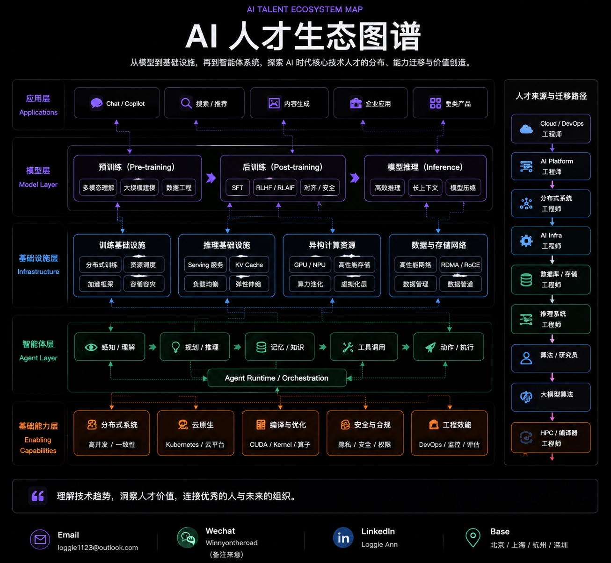

研究 AI 时代最核心技术人才，连接模型、基础设施与未来组织。
深耕 AI 核心技术人才研究，覆盖从模型到基础设施的全栈领域
Pre-training
Post-training
Multimodal
RLHF / RLAIF
Training System
Inference Engine
GPU Scheduling
Distributed Computing
Agent Runtime
Memory System
Tool Infrastructure
RL Infra
Mapping the builders behind AI systems.
从模型能力到基础设施，探索 AI 时代核心技术人才分布、能力迁移与价值创造。

Currently collaborating with AI companies on:
Base: 北京 / 上海 / 杭州 / 深圳
AI 技术招聘顾问，从业 7 年。
2019-2023 聚焦云计算、大数据领域。2023 年至今专注大模型技术招聘。
我的工作不是简单匹配简历，而是理解人才真正的技术价值，帮助人才和组织找到更长期的匹配。